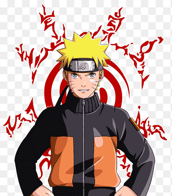
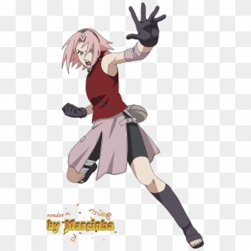

Mi anime favorito
Naruto Shippuden cuenta la historia de Naruto Uzumaki, un joven ninja que sueña con convertirse en Hokage, el líder de su aldea. Durante la serie enfrenta enemigos, hace nuevos amigos y lucha por proteger a las personas que ama.


| Personaje | Rol | Habilidad |
|---|---|---|
| Naruto Uzumaki | Protagonista | Rasengan |
| Sasuke Uchiha | Rival | Sharingan |
| Sakura Haruno | Compañera | Fuerza médica |
Me gusta Naruto Shippuden porque tiene mucha acción, personajes interesantes y enseñanzas sobre amistad, esfuerzo y nunca rendirse.